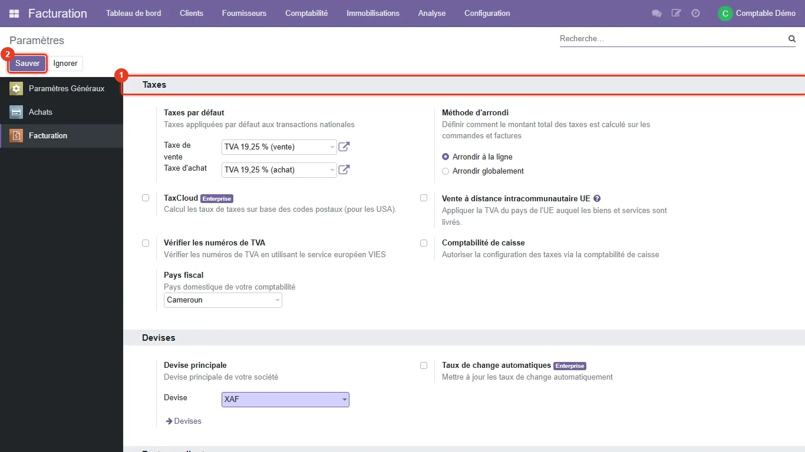

Objectif. Connaître les réglages généraux de la comptabilité.
Où dans Odoo 15Facturation › Configuration › Paramètres

Ce que vous faites
- Ouvrez Configuration › Paramètres : la page regroupe les réglages par section.
- Dans Taxes (1), choisissez la taxe de vente et la taxe d'achat par défaut (TVA 19,25 %).
- Plus bas, vérifiez la devise principale (XAF) et le pays fiscal (Cameroun).
- Cliquez sur Sauvegarder (2) en haut de page.
À vérifier avant de continuer
0 / 2À éviter.
- Ne changez pas la devise principale une fois des écritures passées.
Exercice sur la base de test
Retrouvez la section Taxes et notez la méthode d'arrondi utilisée.